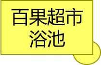

上一张
下一张
关 闭
显示图片
显示文字
显示标题
v1.5 2023年11月5日更新

此图为在校学生自制图。非官方平面图，仅供参考。
对江邀月 制作 2023年6月14日
信息征集/反馈邮箱：3180235660@qq.com
微博：@对江邀月NT
输入地点：
搜索
搜索结果：
此处显示地点指南信息。
{{ item.name }}
收起
1.此平面图为基于HTML5的网页版平面图，通过浏览器即可使用，并带有互动功能，提供更加丰富的信息。
2.点击地图中的建筑图块弹出图文信息窗口，点击图片切换按钮可以查看更多图片。
3.在地点搜索框中输入建筑名称或者院系，店铺等名称后，点击“搜索”按钮后在地图上会突出显示所查找的地点。
此平面地图为信息学院20级某本科生自制的HTML5互动地图，在基于卫星地图绘制的几何图形平面地图的基础上增加了图文信息窗口，地点搜索等互动功能。
制作互动地图的想法早在一年前就有了，2022年6月曾计划制作基于JavaFX的辽大互动地图，但因为Java软件对运行环境有一定要求，可能不易于使用，从而难以推广，最终没有落实。今年学习了WEB开发，于是借助HTML5灵活易用的特点以及JavaScript对运行环境的低要求，制作了这个更易于使用的HTML5互动地图。
六月份先后两次，趁着天气晴朗拍摄了共计183张崇山校区各个建筑外景照片，用于地点图文信息的编写。所有代码，文案及美工等工作都由一人完成，从5月26日开始，耗时19天完成1.0版本，实现了地点图文信息查看以及模糊搜索功能。
由于一个人经历有限，掌握的信息不算多，因此地图提供的信息不够完善，后续将在更新时补充更多更准确的信息。
2023年十月份离开了生活三年多的辽大校园，去外地实习，实习结束后差不多就毕业了，可能以后很难能回来了。在即将离开的前几日，趁着天气晴朗拍摄了一些校园景色，算是在辽大最后的记忆了吧。随后把所拍摄的照片，以及早几年拍摄的一些比较有回忆的照片，整理之后放进了这个地图中，把大学四年的记忆留存在这里。
更新日志
2023.5.19：正式启动崇山地图的制作
2023.6.14：1.0版WEB地图正式上线
2023.6.16：调整颜色，优化视觉效果
2023.6.17：增加一些地点描述信息，完善文案
2023.8.30：更新了新食堂的相关信息，加入了8月拍摄的照片
2023.10.22：加入了蕙星楼，操场等更多的照片，加入图片位置显示
2023.11.5：加入了40余张2020年--2022年的照片，把四年的大学回忆整理在了这里
参考资料
[1]辽宁大学官网；[2]2022年崇山校区，蒲河校区新生地图
——对江邀月 2023年6月（10.30更新）
搜索地点
使用说明
关 于